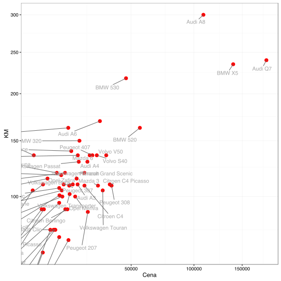

Jak szukać partycji w oparciu o metodę k-medoidów?
Największą zaletą algorytmu k-średnich jest efektywność obliczeniowa. Wyznaczanie średnich i przypisywanie do najbliższej średniej jest algebraicznie szybkie, łatwo się zrównolegla, przez co można stosować te algorytm do dużych baz danych.
Niestety, jak widzieliśmy, opiera się on o kwadrat odległości Euklidesowej. Nie zawsze akurat taka miara podobieństwa nas interesuje. Taka miara jest też bardzo wrażliwa na duże odległości i pojedyncza wartość odstająca może znacząco wpłynąć na sumę kwadratów odległości.
Algorytm k-medoidów pozwoli nam wykorzystywać inne miary odległości za cenę wyższej złożoności obliczeniowej.
Algorytm
Algorytm PAM (Partitioning Around Medoids, nazywany dalej algorytmem k-medoidów) jest następujący
Zainicjuj algorytm wybierając losowe obiekty jako medoidy/centra/reprezentantów grup.
Dla wszystkich obiektów wyznacz ich przypisanie na zasadzie odległości od najbliższego medoidu. gdzie to medoid grupy .
Dla każdej grupy, sprawdź czy inny obiekt z tej grupy nie ma mniejszej sumy odległości od wszystkich pozostałych w tej grupie. Jeżeli tak, to to on powinien być nowym medoidem.
Powtarzaj kroki 2-3 tak długo póki zmienia się przypisanie do grup .
Przykład
Podobnie jak dla algorytmu k-średnich poniższą analizę grup przeprowadzimy na wybranych 57 modelach aut, opierając się na zbiorze danych auta2012 z pakietu PogromcyDanych. Policzyliśmy wcześniej na podstawie dwuletnich ofert, średnią cenę, przebieg, pojemność silnika, liczbę koni mechanicznych i frakcję aut z silnikiem diesla.
Algorytm k-medoidów może działać na uprzednio wyznaczonej macierzy odległości, wyznaczmy więc ją w oparciu o odległość Manhattan.
auta <- archivist::aread("pbiecek/Przewodnik/arepo/bf2846de03bc8434d234b08fd2e31694")
auta$nazwa <- rownames(auta)
auta$Cena_norm <- scale(sqrt(auta$Cena))
auta$KM_norm <- scale(sqrt(auta$KM))
odleglosci <- dist(auta[,c("Cena_norm", "KM_norm")], method = "manhattan")
as.matrix(odleglosci)[1:5,1:5]
## Audi A3 Audi A4 Audi A6 Audi A8 Audi Q7
## Audi A3 0.0000000 0.7184849 1.888609 6.550862 6.980737
## Audi A4 0.7184849 0.0000000 1.170124 5.832377 6.262252
## Audi A6 1.8886091 1.1701242 0.000000 4.662253 5.092128
## Audi A8 6.5508616 5.8323767 4.662253 0.000000 2.415564
## Audi Q7 6.9807367 6.2622518 5.092128 2.415564 0.000000
Przypomnijmy wykres przedstawiający wybrane parametry dla wybranych marek.
library(ggrepel)
ggplot(auta, aes(Cena, KM, label=nazwa)) +
geom_point(size=3, color="red") +
geom_text_repel(color="darkgrey") + theme_bw() +
coord_trans("sqrt", "sqrt")

Przyjmijmy, że chcemy znaleźć 4 grupy.
Do znalezienia podziału wykorzystajmy funkcję pam() z pakietu cluster.
library(cluster)
grupy <- pam(odleglosci, k=4)
Wynikiem jest lista, zawierająca między innymi pole clustering z informacją o przypisaniach kolejnych obserwacji oraz centers z informacją o zidentyfikowanych środkach grup.
head(grupy$clustering)
## Audi A3 Audi A4 Audi A6 Audi A8 Audi Q7 BMW 316
## 1 2 2 3 3 1
grupy$medoids
## [1] "Peugeot 307" "Mazda 6" "BMW X5" "Opel Corsa"
grupy$id.med
## [1] 31 22 12 24
Wykorzystajmy obie te wartości aby narysować auta po podzieleniu na grupy. Dodatkowo wyróżnimy środki grup.
auta$grupa = factor(grupy$clustering)
centra <- auta[grupy$id.med,]
ggplot(auta, aes(Cena, KM, label=nazwa, color=grupa)) +
geom_point(size=3) + theme_bw() +
geom_point(data=centra, size=6) +
geom_text_repel(data=centra, color="black", size=7) +
coord_trans("sqrt", "sqrt")

Sylwetki grup
Do diagnostyki pogrupowania wykorzystuje się często tzw. sylwetki (ang. silhouette).
Są to wykresu, przedstawiające dla każdego obiektu informację na ile blisko temu obiektowi do wszystkich pozostałych z jego grupy w stosunku do wszystkich pozostałych z innej, najbliższej grupy.
Formalnie, możemy tę wartość zapisać jako
gdzie to średnia odległość obserwacji od pozostałych z jej grupy, a to najmniejsza ze średnich odległości do pozostałych grup.
Im bliższa wartości 1, tym bardziej dany obiekt pasuje do swojej grupy, im bliższa wartości -1, tym bliżej temu obiektowi do grupy sąsiedniej.
library(factoextra)
sylwetka <- silhouette(grupy$clustering, odleglosci)
sylwetka[1:6,]
## cluster neighbor sil_width
## [1,] 1 2 0.5544012
## [2,] 2 1 0.2354746
## [3,] 2 1 0.4535087
## [4,] 3 2 0.6164420
## [5,] 3 2 0.7226221
## [6,] 1 4 0.1658866
fviz_silhouette(sylwetka)
## cluster size ave.sil.width
## 1 1 26 0.37
## 2 2 15 0.26
## 3 3 3 0.69
## 4 4 9 0.58